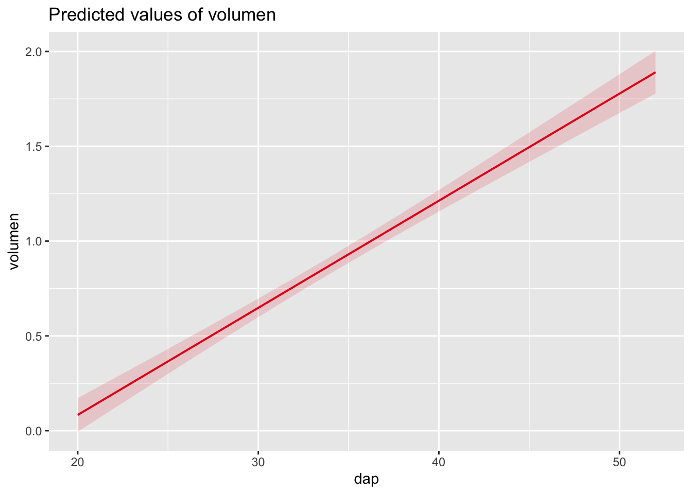

5 Herramientas para visualizar datos
Las siguientes herramientas, permiten conocer rápidamente las características de la base de datos con la que estamos trabajando
5.2 Carga de la base de datos
data("airquality") #Base de datos con variables que estudian la calidad del aire
vis_dat(airquality)
Si se desea, se pueden omitir los datos NA ßßßßß

plot_missing(airquality) # Me indica si tenemos datos en blanco y me da una recomendación, que en este caso dice que es "a", lo cual no es mucho problema